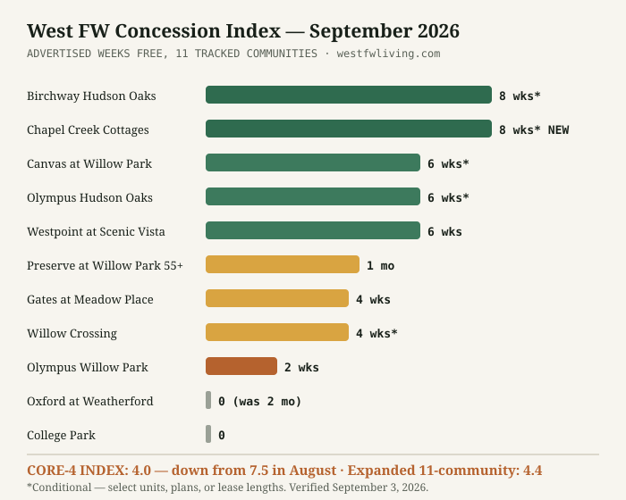

West Fort Worth Rent Report: September 2026
Companion reads: rent-vs-buy computed with these exact rents and the Builder Incentive Index (August edition; September's is in verification). Last month's edition: August 2026.
The concession window slammed shut in Willow Park — and reopened eight miles west. The Index just posted its sharpest one-month drop on record.
✓ Edition No. 2 — all 11 tracked communities re-verified from public listings and property websites, September 3, 2026
The number that defines this month
The West FW Concession Index fell from 7.5 to 4.0 — nearly halving in a single month. Olympus Willow Park's advertised offer went from up-to-8 weeks free to 2 weeks. Oxford at Weatherford's "2 months free" — the deepest concession we've ever tracked — is simply gone, and its 1-bedroom sticker rose $169 at the same time. Gates at Meadow Place trimmed 7 weeks to 4. If you read August's edition and planned to shop the Willow Park cluster "soon," soon already happened.
But the concessions didn't disappear — they moved west. Birchway Hudson Oaks is now advertising "Up to 8 Weeks Base Rent Free," and Chapel Creek Cottages in west Fort Worth — which offered nothing at all in August — posted "Get Up to 8 Weeks FREE." The deep-offer cluster has migrated from the Willow Park lease-ups to Hudson Oaks and the 76108 corridor.
All 11 tracked communities, verified September 3
| Community | Advertised from | Concession | vs. August | |
|---|---|---|---|---|
| Birchway Hudson Oaks | Hudson Oaks | $1,378 1BR | UP TO 8 WKS | Held 8; stickers up |
| Chapel Creek Cottages | West FW (76108) | $1,530 (1–3BR) | UP TO 8 WKS | New — was 0 |
| Canvas at Willow Park | Willow Park | $2,299 2BR | 6 wks (13–15 mo) | Held 6 |
| Olympus Hudson Oaks | Hudson Oaks | $1,267 1BR | Up to 6 wks | Down from 8 |
| Westpoint at Scenic Vista | West FW (76108) | $1,299 1BR | 6 wks + no app fee | Held 6 |
| Preserve at Willow Park (55+) | Willow Park | $1,255 1BR | 1 month free | ~Held |
| Gates at Meadow Place | Willow Park | $1,412 1BR | 4 wks | Down from 7 |
| Willow Crossing Townhomes | Willow Park / Aledo | $2,475 3BR | Up to 4 wks | Held 4; rent +$253 |
| Olympus Willow Park | Willow Park | $1,425 1BR | 2 wks | Down from 8 |
| Oxford at Weatherford | Weatherford | $1,284 1BR | None | Was "2 months free" |
| College Park | Weatherford | $1,200 2BR | None | Held 0; base-rent play |
"Advertised from" is the lowest listed rate for the stated floor plan on the verification date; conditional offers vary by unit, plan, and lease length. Floor plans we could not re-verify this cycle are omitted rather than carried forward.
The West FW Concession Index
September 2026 core-4 reading: 4.0 (Olympus Willow Park 2, Gates 4, Canvas 6, Willow Crossing 4) — down from 7.5 in August, the sharpest tightening since we began tracking. This month also debuts the expanded 11-community Index: 4.4, covering every property in the table above, which will run alongside the core-4 from here on. A falling Index means the market is tightening and negotiating leverage is fading; the split between the two readings tells you where: Willow Park proper is tightening fast while Hudson Oaks and west Fort Worth still pay you to move in. Cite freely with attribution: West FW Concession Index, West FW Living.

A second signal: stickers rose where the offers moved
Concessions and asking rents moved in opposite directions this month, twice over. Where offers deepened or held, stickers climbed — Birchway's verified 2-bedroom went from $1,497 to $1,708 while keeping its 8 weeks, and Willow Crossing's 3-bedroom jumped from $2,222 to $2,475 behind a held 4-week offer. And where offers vanished, stickers climbed anyway: Oxford's 1-bedroom rose $169 the same month its two free months disappeared. Both patterns say the same thing — run the math on effective rent, never the banner. Eight weeks free on Birchway's $1,708 2BR is worth about $3,145, an effective ~$1,446/month on a 12-month term. The true-rent table computes this for every tracked community, and the calculator does it for any quote you're holding.
Three readings of the data
For renters: the fall leverage script flipped in one month. If you're targeting Willow Park proper, the deep-concession era there looks over — negotiate on the 2-to-4-week offers that remain and get quotes in writing, because stale listings still advertise offers that are gone. If you're flexible on geography, Hudson Oaks and the 76108 corridor are where this market still pays you to move in. For would-be buyers: shrinking concessions raise effective rents even when stickers hold, which shifts the rent-vs-buy math toward buying at the margin — re-run it with this month's figures on the rent-vs-buy page. For landlords and small investors: the institutional lease-ups that were giving away two months have largely stopped; private landlords in eastern Parker County regain pricing power this month, while west Fort Worth stays a concession knife-fight.
Sources & methodology
Every figure above was re-verified on September 3, 2026 from live public listings and property websites — including listing pages with same-day "price last verified" stamps and, where available, the property's own specials page. Nothing is carried forward from August: floor plans we could not re-verify are omitted, and conflicting sources are resolved in favor of the dated, verified quote (noted per-community in the data table). Broader context on rental trends is available from the U.S. Census Housing Vacancy Survey and HUD Fair Market Rent data for Tarrant and Parker counties. Point-in-time figures change without notice; the "last verified" date governs.
About this report
The West Fort Worth Rent Report is compiled monthly by West FW Living from public listing data and market sources, focused exclusively on Fort Worth's west side and eastern Parker County. Figures are point-in-time and verified the week of publication. Journalists and researchers: this data is free to cite with attribution and a link. Questions or corrections: leads@anastasiaweaver.com. Previous edition: August 2026. Next edition: October 2026.